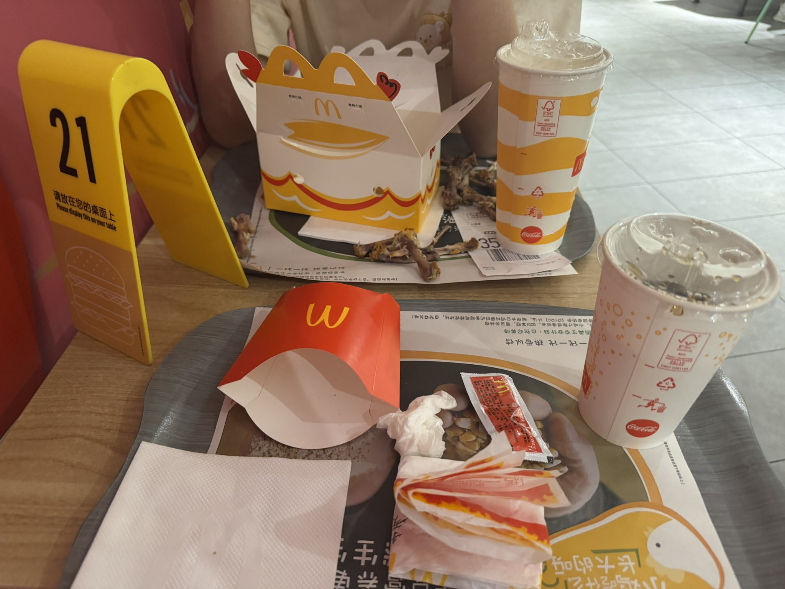

たたなこ🏳️⚧️🍥
@tatanakots
据了解，本次午餐小箱子并非独自享用，而是与好友たたなこ一同就餐。たたなこ点选的餐品为麦辣鸡腿堡搭配中份薯条，经典组合，简约而不失风味。
专家提示，快餐作为现代生活中便捷的选择，在适度享用的同时，应注重饮食多样化与合理搭配，摄入足量蔬菜与水果，方能更好地保障营养均衡与身体健康。

たたなこ🏳️⚧️🍥
@tatanakots
本台消息：
今天中午，小箱子按时用餐，选择了麦当劳推出的“十翅桶”套餐。餐品内含三份麦辣鸡翅（每份两只）以及两份薄皮焦香V翅（每份两只），色泽金黄，外酥里嫩，口感鲜美，充分满足了小箱子在午间的能量与味觉需求。
@AcboxLiu https://t.co/z73OZLujXd